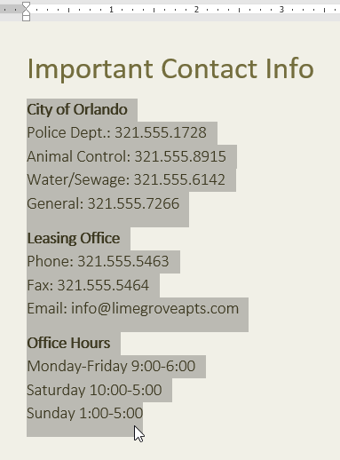
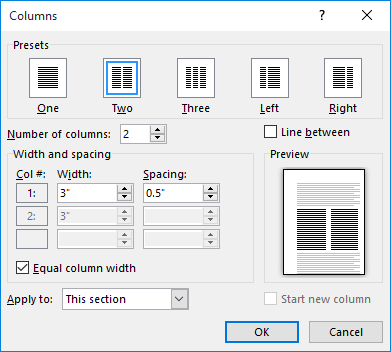
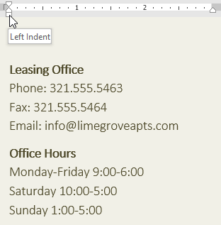
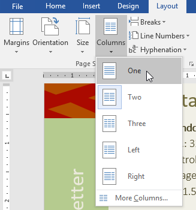
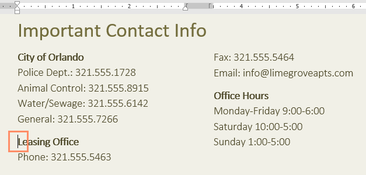
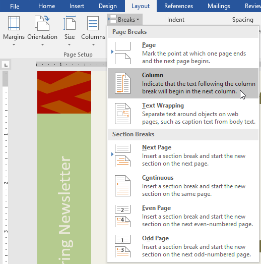
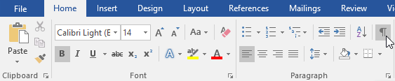
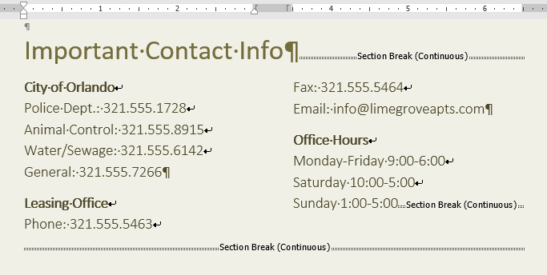
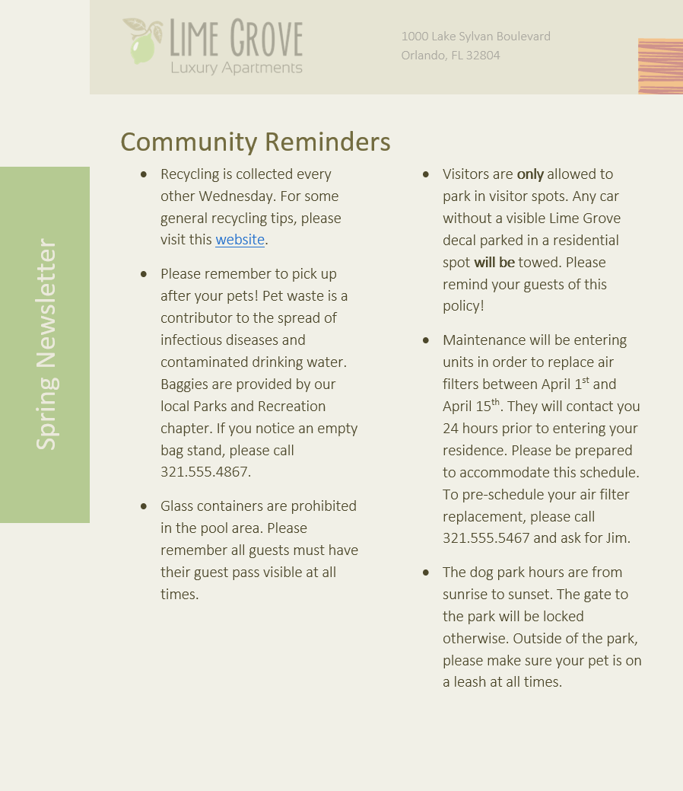

Lesson 15: columns
Lesson 15: Columns
/en/word/breaks/content/
Introduction
Sometimes the information you include in your document is best displayed in columns. Columns can help improve readability, especially with certain types of documents—like newspaper articles, newsletters, and flyers. Word also allows you to adjust your columns by adding column breaks.
Watch the video below to learn more about columns in Word.

To add columns to a document:
- Select the text you want to format.

2. Select the Layout tab, then click the Columns command. A drop-down menu will appear. 3. Select the number of columns you want to create. 4. The text will format into columns.
4. The text will format into columns.

Your column choices aren't limited to the drop-down menu that appears. Select More Columns at the bottom of the menu to access the Columns dialog box. Click the arrows next to Number of columns: to adjust the number of columns.

If you want to adjust the spacing and alignment of columns, click and drag the indent markers on the Ruler until the columns appear the way you want.

To remove columns:
To remove column formatting, place the insertion point anywhere in the columns, then click the Columns command on the Layout tab. Select One from the drop-down menu that appears.

Adding column breaks
Once you've created columns, the text will automatically flow from one column to the next. Sometimes, though, you may want to control exactly where each column begins. You can do this by creating a column break.
To add a column break:
In our example below, we'll add a column break that will move text to the beginning of the next column.
- Place the insertion point at the beginning of the text you want to move.

2. Select the Layout tab, then click the Breaks command. A drop-down menu will appear. 3. Select Column from the menu.
4. The text will move to the beginning of the column. In our example, it moved to the beginning of the next column.
To learn more about adding breaks to your document, review our lesson on Breaks.
To remove column breaks:
- By default, breaks are hidden. If you want to show the breaks in your document, click the Show/Hide command on the Home tab.

2. Place the insertion point to the left of the break you want to delete. 3. Press the delete key to remove the break.
3. Press the delete key to remove the break.

Challenge!
- Open our practice document.
- Scroll to page 3.
- Select all of the text in the bulleted list below Community Reminders and format it as two columns.
- Place your cursor at the beginning of the fourth bullet in front of the word Visitors.
- Insert a column break.
- When you're finished, your page should look something like this:

/en/word/headers-and-footers/content/